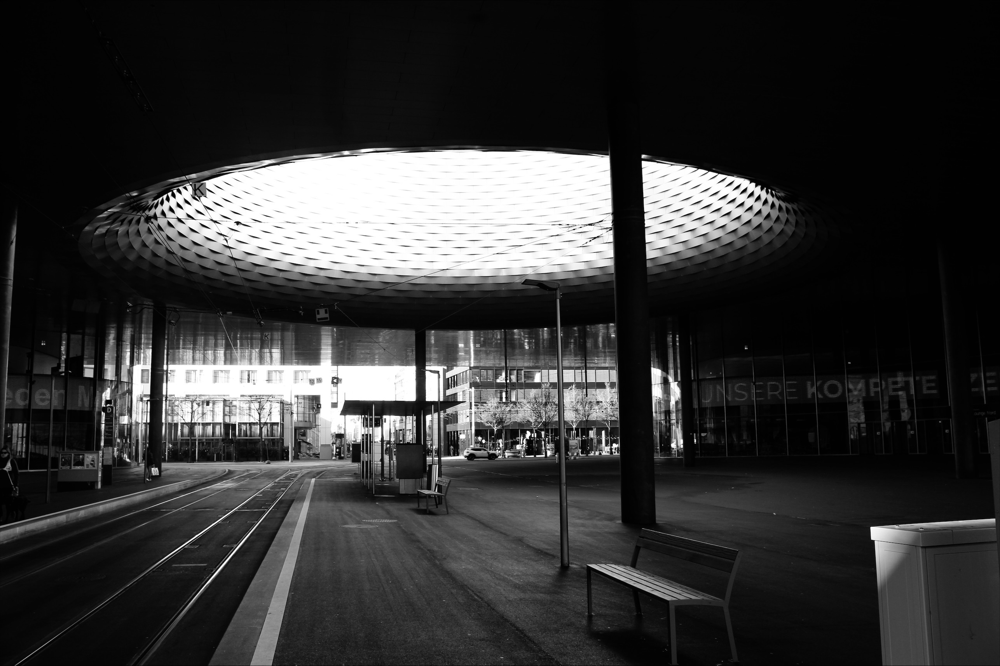
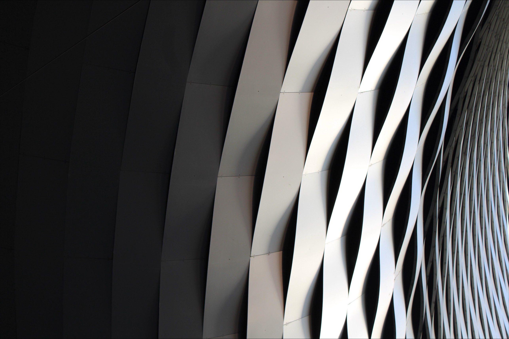

Nutzung
Die Messe Basel dient als zentraler Ort für Messen, Kongresse und Ausstellungen und ist damit ein bedeutender Begegnungsort für Einheimische wie auch für Touristen. Die Anlage beherbergt jährlich zahlreiche Veranstaltungen, darunter Fachmessen wie die Art Basel, Publikumsveranstaltungen wie die Herbstmesse oder Fantasy Basel, Kongresse, Konzerte wie die Baloise Session, Sportevents wie die Hybrid Games Switzerland sowie Firmenanlässe. Dank der flexibel kombinierbaren Räumlichkeiten kann die Messe vielseitig genutzt und präzise auf unterschiedliche Anforderungen abgestimmt werden [21] [22].

Nachhaltigkeit
Die Messe Basel wurde unter besonderer Berücksichtigung ökologischer Kriterien geplant und realisiert. Für die Nachhaltigkeitsberatung war das Ingenieurbüro Stefan Graf zuständig. Der Neubau verfügt über eine hochwärmedämmende Gebäudehülle und ist an das Fernwärmenetz der Stadt Basel angeschlossen. Zudem werden die Zielwerte der SIA-Norm 380/4 in den Bereichen Beleuchtung, Lüftung und Klimatisierung eingehalten. Als einziges Messegebäude der Schweiz trägt die Messe Basel das Minergie-Zertifikat BS-054. Darüber hinaus ist das Dach begrünt und mit einer Photovoltaikanlage ausgestattet. Aufgrund der zentralen Lage in der Stadt wird ausserdem die Nutzung des öffentlichen Verkehrs gefördert, wodurch der motorisierte Individualverkehr reduziert wird. Wie uns der Maschineningenieur Stefan Graf telefonisch erläuterte, zeigt die nachhaltige Positionierung der Messe Basel exemplarisch, wie räumliche Planung und technische Gebäudeausrüstung gemeinsam zu ökologischer Verantwortung beitragen können [23][21].
Architektonische Bedeutung
Die beiden Foyers des Gebäudes werden von über 110 Meter langen LED-Bändern, hochauflösenden Screens und dynamisch steuerbaren Lichtstimmungen geprägt. Diese Elemente schaffen nicht nur eine einladende Atmosphäre, sondern erfüllen zugleich kommunikative Funktionen. Weil sie flexibel angepasst werden können, lassen sich visuelle Inhalte auf unterschiedliche Veranstaltungen, Kundenbedürfnisse und Kommunikationsanforderungen abstimmen. Aus architektonischer Sicht wird der Raum dadurch zu einer wandelbaren Oberfläche, die sich fortlaufend neu inszenieren lässt [24].
Ein weiteres zentrales architektonisches Element des Neubaus ist die City Lounge. Dabei handelt es sich um einen überdachten öffentlichen Raum mit Tramhaltestelle. Sie markiert den Haupteingang zu den Messe- und Eventhallen und fungiert zugleich als sozialer Treffpunkt im Stadtraum. Besonders markant ist die kreisrunde Öffnung im Lichthof, durch die Besucherinnen und Besucher direkt in den Himmel blicken können [25].
